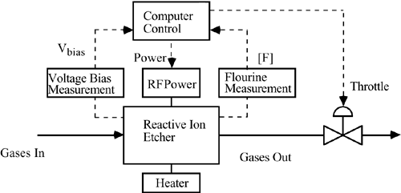
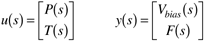
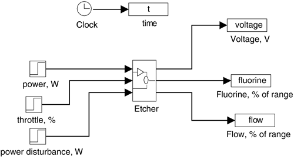

| [ Team LiB ] |
|
M14.2 Reactive Ion EtcherAn important process in semiconductor device manufacturing is plasma etching (or reactive ion etching). In this unit operation, reactive ions are used to selectively remove (etch) layers of solid films on a wafer. A major objective of a control system is to achieve relative etch rates (angstroms/second) by manipulating the process inputs. Currently, etch rate measurements are not readily available, so it is assumed that by measuring and controlling other variables, good control of the etch rate can be obtained. Two variables important to control are the voltage bias of the plasma and the fluorine concentration, since they ultimately determine the etch rate. Two important manipulated variables are the RF power and the outlet valve position (throttle). A schematic of a reactive ion etcher is shown in Figure M14-1. Figure M14-1. Reactive ion etcher. A reactive ion etcher has power and throttle position inputs (P and T) and voltage (Vbias) flourine concentration (F) as outputs.  Questions to Answer Are fundamental (first principles) models of plasma etchers easy to develop? Will fundamental models or input/output tests (i.e., step tests) normally be used for control system design? The nominal and range of operating conditions for this system are as follows:
Disturbances of up to ±25 W in power are possible. A SIMULINK block diagram for a reactive ion etcher is shown in Figure M14-2. The inputs and outputs of the etcher are in physical (not deviation) variables. Figure M14-2. SIMULINK diagram for reactive ion etcher. |
| [ Team LiB ] |
|